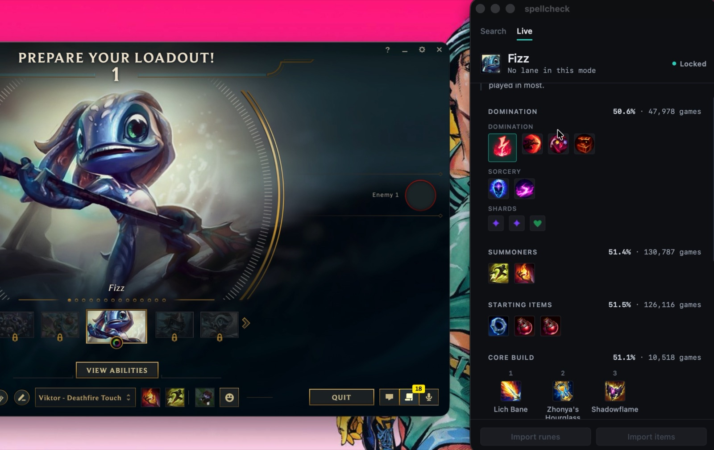

What it is
I'm a hardstuck gold mid. I built this because I was tired of alt-tabbing to a build site during the ninety seconds of champ select and reading a page that never quite matched the role I'd been given. spellcheck sits beside the client, reads the champion and role you lock, and shows the build for that pair. That's it.
I'm not qualified to tell anyone what to build — so the app doesn't. It shows you what the data says, and when it's reasoning rather than measuring, it tells you that too.
Champion and role come from champ select itself.The client publishes what you locked and which position it gave you, on a local API on your own machine. Nothing to type, nothing to search.
Every percentage carries its sample.Measured: a number from real games, shown with how many games it came from.A win rate over 1,893 games and one over 12 are not the same claim, and the app never lets them look like one.
Situational advice is marked as advice.Argued: a rule, not a statistic. "They have Soraka, consider antiheal" is an argument, and the app paints it amber so it never borrows a number's authority."Build antiheal, their comp heals" is a reason, not a win rate. It gets an amber rail and stays out of the statistics.
It never acts on its own.Rune and item imports are a button press or nothing. The buttons are there, and disabled, because the client can't be written to yet — see known issues.
It never touches the game.It reads the client's own local API during champ select and Riot's Live Client Data API once the game starts, both on your machine. No game memory, no injection, no input, and it never writes to the client. Whether Riot is fine with that is Riot's call, not mine; what I can tell you is that this is all it does, and the code is there to check.
How it reads champ select
No Riot account credentials are involved at any point. The League client runs a small web server on your machine for its own interface, and writes its port and a throwaway password to a file when it starts — that password is the client's own, for its own local server, and it changes every launch. spellcheck reads that file, connects, and subscribes to champ-select events over a WebSocket, so it hears the lock the moment it happens without polling anything.
lockfile with its port and password when it starts.127.0.0.1. One subscription: the champ-select session.championId and assignedPosition arrive; the build for that pair is fetched and drawn."League isn't running" is the app's default state, not an error. When it can't find the client, the window says so and lists every path it looked in. When the client is open and it still says offline, that list is what you need to fix it.
Where the data comes from
Builds come from documented APIs only. Nothing is scraped, from anyone, ever.
| Win rates and samples | Riot's API, crawled daily in CI into per-champion JSON; and OP.GG's published endpoint, queried per request and never stored.The crawled data ships with the app. OP.GG data doesn't — it's theirs, and it's fetched when you need it. |
|---|---|
| Names, icons, item stats | Data Dragon, Riot's own static data. |
| What happens in the app | Nothing leaves your machine except those requests. No analytics, no account, no telemetry. |
One row, as the app draws it. The percentage is the win rate of that rune page for that champion in that role; the number after it is how many games that percentage was measured over.
Build data is fetched one champion at a time, when it's needed. The full dataset is never loaded into memory, because it doesn't need to be.
Measured vs argued
This is the one rule the interface is built around, and it's the reason the page you're reading has blue and amber rails down its margin. A win rate is a measurement. A reason to build a particular item against a particular team is an argument. Both are useful. They are not the same kind of thing, and the app will not let the second borrow the authority of the first.
Blue is measured
A statistic with its sample beside it. Win rates, pick rates, games. If there's no sample, there's no blue.
Amber is argued
A rule the app applied to this game: their comp, your comp, the state of the lane. Never a number.
An argued suggestion looks like this. Amber on the item, the reason in plain words, and no percentage — because there isn't one.
Three checks produce these arguments: what the enemy comp threatens, what your own comp is missing, and — once the game starts — whether you're ahead or behind your lane opponent. Each one says which it is.
Small on purpose
Nothing that runs beside a game should cost more than the game does. That's not a preference about how to build it; it's the reason it exists at all, so it's written down as a constraint and every change is held to it.
| Download | 7.4 MB macOS · 3.1 MB WindowsThe sizes of the files above, as served. |
|---|---|
| Memory budget | Under 120 MB residentArgued: this is the budget the app is held to, not a measurement I'm publishing. Windows in particular has not been measured yet.Set against macOS's WebKit. Windows renders in WebView2, which runs more processes, and I haven't measured it there yet — so I'm not claiming it there yet. |
| Made of | Rust, a system WebView, and plain TypeScript and CSSNo Electron, no bundled browser, no UI framework. If a dependency isn't strictly necessary it isn't in there. |
| Talks to | The client on 127.0.0.1, Riot's data, OP.GG's endpoint, and the update checkOnce at launch, for the update. Nothing installs without a press. |
Known issues in 0.1.4
The honest list. Every one of these is in the changelog too.
The builds aren't code-signed, so both systems warn you.macOS blocks the first open and Windows shows SmartScreen — on every update, because the updater re-runs the installer. Neither means the download was tampered with. Why none of it is signed: I'm broke. Apple wants $99 a year and a Windows certificate several hundred, and that isn't a bill worth paying for a beta yet; the release workflow is ready for the certificate the day there is one.
macOS can't update itself.An unsigned bundle can't replace itself inside /Applications. The app tells you a new version exists and opens the download; you install it by hand. Windows installs the update on a press.
Rune and item imports are disabled.The buttons are there so the layout is honest about where they'll be. Nothing in the client layer can write a rune page yet.
The memory budget hasn't been measured on Windows.See above. Until it has, "under 120 MB" is a target there, not a fact.
Downloads come from an r2.dev address.Cloudflare documents that host as development-only. Moving off it costs every installed copy one manual reinstall, so it'll happen once, deliberately.
Install
Both systems will try to stop you, because the build isn't code-signed. macOS does it once per install; Windows does it on every install and every update. It's the same two clicks each time.
macOS
- Open the
.dmgand drag spellcheck out of it — into the Applications folder inside your home folder (~/Applications), not the system one, while it's unsigned. If there isn't one, make it. - Launch it and let it get blocked. That refused launch is what puts it in the queue for the next step.
- System Settings → Privacy & Security. Scroll down to Security and press Open Anyway, then enter your Mac password.
- Launch again. It opens, and keeps opening from then on.
Windows
- Run the
-setup.exe. SmartScreen says "Windows protected your PC" and offers only Don't run. - Press More info, then Run anyway.
- Open spellcheck. It finds League wherever the installer put it, including other drives.
Right-clicking and choosing Open was the old macOS shortcut for this and no longer works on current versions. If the app says "Offline" with the client open, the notice under it lists every path it checked and names the config file to edit — one line, and relaunch.
Source
The code is on GitHub under MIT: bryanbrian1/spellcheck. The crawled build data in the repository is Riot-sourced and ships with the app; OP.GG's data isn't ours to relicense and is never stored.
It's a side project and it's early. If it gets something wrong in your game, that's the thing I want to hear about — open an issue. What broke is more useful than what worked.